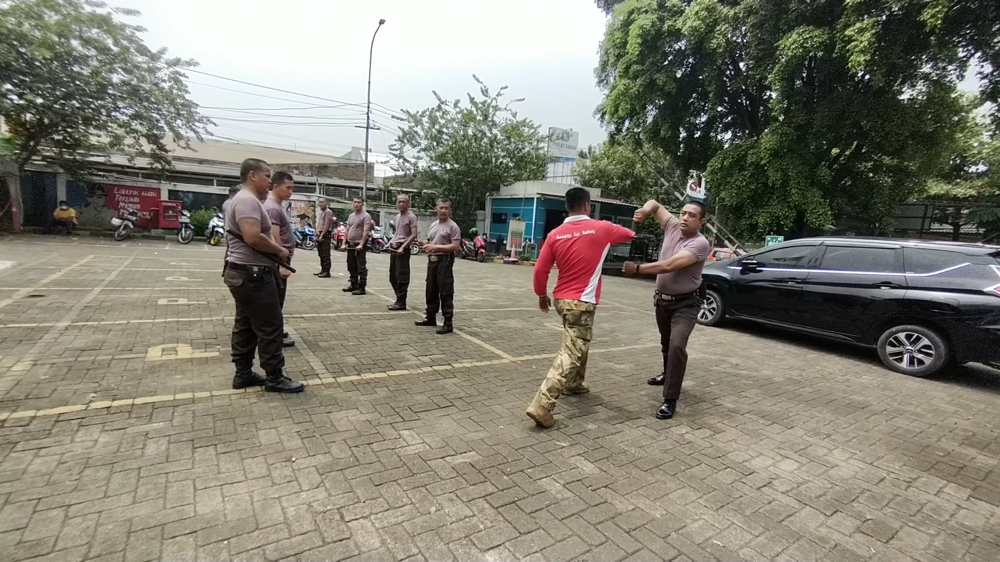
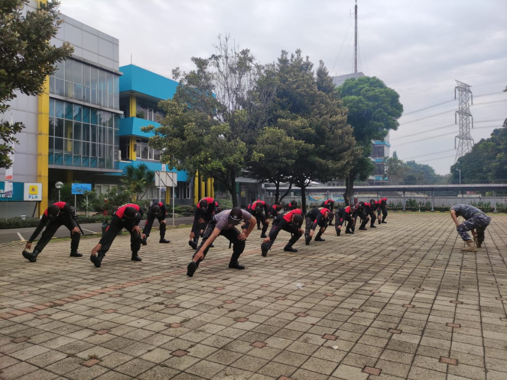
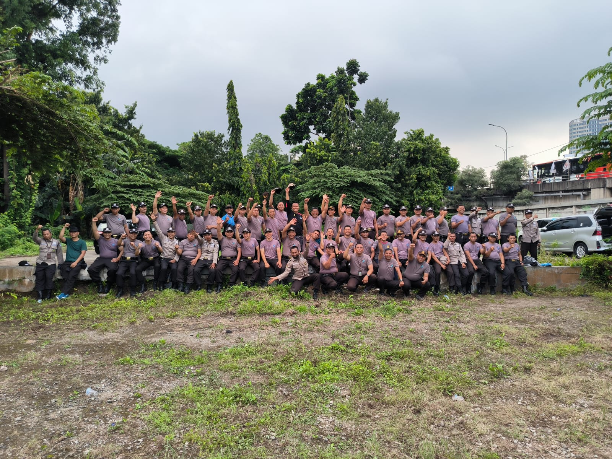
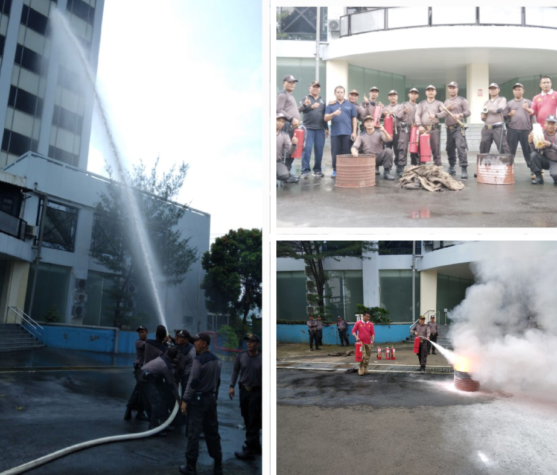

Pelatihan Kesamaptaan PLN UP3 Pondok Gede.

Pelatiahan Satpam Kantor Induk PT PLN (Pesero) UIT JBB

Pelatihan Penyegaran SATPAM di Lingkungan PT PLN (Persero) UID Jakarta

Pelatihan pemadam kebakaran SATPAM UJPK unit kerja IT-PLN
Pengelolaan bidang pengamanan PT Usaha Jaya Prima Karya sudah berpengalaman karena menggunakan tenaga Satuan Pengamanan yang profesional dan memiliki sertifikat kompetensi. Dalam pelaksanaan tugasnya, para Satpam telah difasilitasi aplikasi digital mulai dari absensi, patroli, hingga laporan yang terintegrasi.